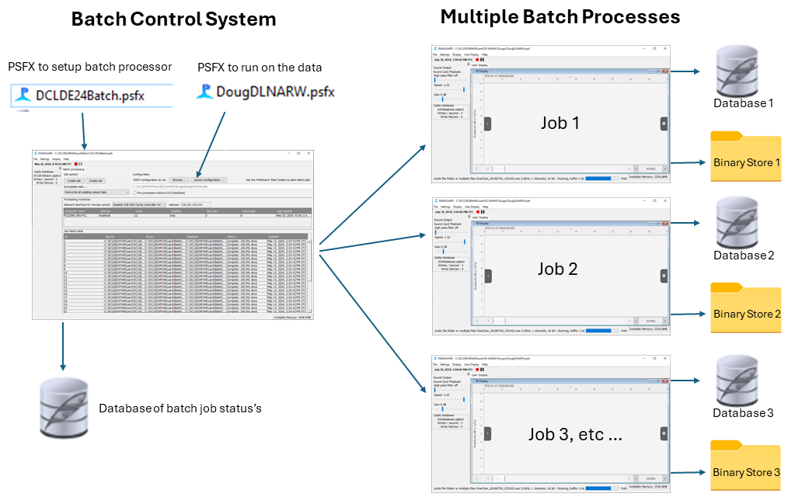

The Batch Processing module can be used to run the same configuration file on multiple datasets without having to go into the configuration for every dataset to change the location of the source files, the output database name, and the location of the binary store.
It is particularly useful for processing datasets from deployments of multiple autonomous recorders, but also has application in reprocessing of any data where you want to run the same PAMGuard algorithms on multiple sets of data.
The module can process raw data using Normal Mode to run detectors on folders of sound files (Figure 1).
It can also be used to process data in Viewer Mode to perform tasks such as reclassifying clicks, or running the click train detector
Figure 1. Normal mode processing of raw audio data
The batch processing module is a plugin module, which needs to be added to your PAMGuard installation
If you're reading this in the PAMGUard online help, you've already installed the Batch Processing module.
Otherwise, you need to download the latest jar file using the links from the PAMGuard plugins pages, then copy the jar file into your plugins folder (e.g. C:\Program Files\Pamguard\plugins) from where PAMGuard will automatically add it to the list of available modules in the Utilities menu next time you run PAMGuard.